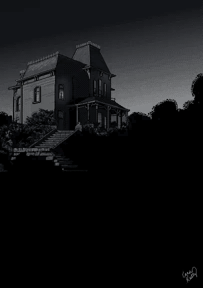

Mistérios da Mansão Esquecida

Você é convidado para uma festa exclusiva em uma mansão antiga e isolada,
situada no topo de uma colina. A atmosfera é carregada de mistério desde o
momento em que você chega. À medida que a noite avança, os convidados
começam a desaparecer um por um, e você percebe que está preso dentro da
mansão. Com as portas trancadas e janelas seladas, você percebe que algo
sinistro está acontecendo. Agora, você deve explorar os corredores escuros
e os quartos sombrios da mansão para desvendar seus segredos e escapar
antes que seja tarde demais.